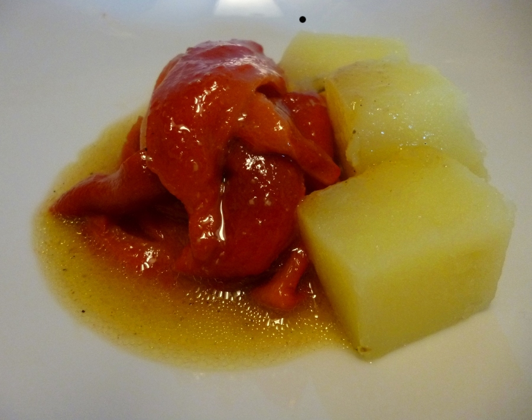

ASADILLO MANCHEGO DE PIMIENTOS
Ingredientes
- 3-4 pimientos gordos y llenos
- 2 dientes de ajo morado de la Mancha
- 3 patatas gordas pero no enormes
- Sal gorda --si se cocinan en agua
- Sal fina
- 1 clavo de olor
- 1 cucharada de comino en grano
- 3 bolas de pimienta
- 1 limón, para el zumo y un poco de ralladura
- Aceite de oliva virgen extra

El asadillo manchego se hace con diversas verduras, según la temporada. Puede incluir también tomates y berenjenas. A mi me gusta más de pimientos rojos grandes y llenos. Qué rico.
El gran cocinero Pepe Rodríguez Rey, en su restaurante El Bohío, de Illescas, hacía un asadillo de pimientos con parfait de cebolla memorable hace unos años.
Las patatas también se pueden cocer con agua muy salada y con su piel. Luego se pelan y se cortan en rodajas o en cubos. La presentación de la patata en cubos es como más bonita.

Lavar los pimientos, secarlos bien. Lavar las patatas y envolverlas en papel de aluminio. Encender el horno a 170º C. Colocar ajustados los pimientos en una fuente de barro, porcelana o vidrio. Meter los dientes de ajo debajo de los pimientos, para que se asen sin quemarse. Meter en el horno los pimientos en su fuente y las patatas en la rejilla.
Al cabo de 30-35 minutos, dar la vuelta a los pimientos y comprobar si los ajos están tiernos, para sacarlos si un palillo los atraviesa con facilidad. Continuar con la cocción. Sacar las patatas cuando se atraviesen con un palillo. Dejar templar.
Cuando los pimientos estén en su punto, sacarlos, cubrir la fuente con papel de aluminio y este con un par de trapos de cocina, para que suden y se pelen bien.
Pelar las patatas cuando estén templadas y cortarlas en rodajas o en cubos, para otra presentación.
Pelar los pimientos cuando se puedan tocar porque ya no queman. Pelarlos, retirar las semillas y guardar la carne limpia en una fuente. Recoger el jugo que hayan soltado. Cortar la carne de los pimientos en tiras, más bien con la mano, pero recortar las venas que queden colgando, que afean el plato. Sazonar con un poco de sal fina. Reservar.
En el mortero echar los ajos asados y pelados, el clavo, el comino, las pimientas, 1 trozo como 1 almendra de piel amarilla de limón, un pellizco de sal gorda y machacar todo muy bien hasta reducirlo a una pasta. Añadir 1 cucharada de zumo de limón, otras 3-4 del jugo de los pimientos. Montar el majado añadiendo poco a poco 4-5 cucharadas de aceite o más, hasta que esté espeso y emulsionado. Probar por si hay que añadir más limón, más jugo de pimiento o más sal. Corregir.
En una fuente poner en montaña las tiras de pimiento, rodear con las patatas y verter por encima el majado del mortero.
Se pueden cortar las patatas en cubos, como en la imagen de la receta y emplatar en los platos tal como se ve.